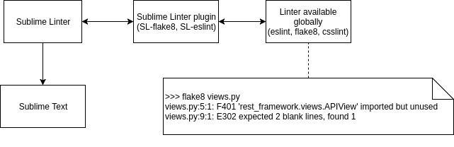

Guide to Sublime like a normal person
First of all, verify that you have installed the latest version of Sublime Text 3.
General settings
Add the following settings in Preferences > Settings > User Tab
"trim_trailing_white_space_on_save": true, "auto_complete": false, "translate_tabs_to_spaces": true, "word_wrap": "false",
trim_trailing_white_space_on_save deletes the trailing spaces. This is useful to select text
properly and sometimes is required by many languages.
auto_complete improves sublime's performance. If the project is huge sublime will get slow while
this feature is on by default, having to look up for everything you write. Autocomplete still will be
triggered if you press tab while writing.
translate_tabs_to_spaces forces to always use spaces when tabbing. This is a personal choice, you can
use either tabs or spaces, but be consistent with the one you or your team use.
word_wrap if set to false, helps avoiding problems when using features like multiline select.
Installing packages
Install the package control as explained there.
To use it go to Tools > Command Palette or by default the shortcut keys are:
Linux: ctrl+shit+P
Os X: cmd+shift+p
Finally, the steps to install a new package are:
- Select the option:
Package Control: install package. - Wait until the packages are loaded.
- Write the name of the package you want to install.
A talk about linters first
A lint tool performs static analysis of source code and flags patterns that might have errors or otherwise cause problems for the developer. In other words, it tells you where you are writing incorrect/badly-formatted code. A linter is a software, that receives the files to analyze as paramters, and it will return an output indicating in which lines somethings is weird.
Sublime Linter
In my opinion, this is the most important package everyone should install, that's why I introduced linters first. Sublime Linter provides an interface to communicate with the linters, and the errors will be displayed in the editor in an elegant manner. This means that Sublime Linter will talk with the linter you have installed in your system globally, and will display in the editor the errors reported by the linter.
As the site reads:
SublimeLinter is a plugin for Sublime Text 3 that provides a framework for linting code. Whatever language you code in, SublimeLinter can help you write cleaner, better, more bug-free code. SublimeLinter has been designed to provide maximum flexibility and usability for users and maximum simplicity for linter authors.
The concept behind it is very simple: 1. Install globally in your system a linter for the language of your choice (pep8, eslint, csslint, rubocop, etc). 2. Install the corresponding sublime linter through the package control.
Useful linters
Choose the one that suits you more, and install it through the package manager of the corresponding language. Eg: pip for python, gem for ruby, etc.
| Language | Linter | Sublime package name | Description |
|---|---|---|---|
| python | pep8 | SublimeLinter-pep8 | tool to check your Python code against some of the style conventions in PEP 8 |
| python | pep257 | SublimeLinter-pep257 | static analysis tool for checking compliance with Python docstring conventions |
| python | pyflakes | SublimeLinter-pyflakes | checks Python source files for errors |
| python | flake8 | SublimeLinter-flake8 | [recommended] includes lint checks provided by the PyFlakes project, PEP-0008 inspired style checks provided by the PyCodeStyle project, and McCabe complexity checking provided by the McCabe project |
| python | mypy | SublimeLinter-contrib-mypy | [recommended] includes static type checker (python 3) |
| javascript | jshint | SublimeLinter-jshint | JSHint is a program that flags suspicious usage in programs written in JavaScript |
| javascript | eslint | SublimeLinter-eslint | [recommended] tool for identifying and reporting on patterns found in ECMAScript/JavaScript code. In many ways, it is similar to JSLint and JSHint with a few exception |
| css | csslint | SublimeLinter-csslint | open source CSS code quality tool |
| sass | sass-lint | SublimeLinter-contrib-sass-lint | A Node-only Sass linter for both sass and scss syntax! |
| ruby | rubocop | SublimeLinter-rubocop | A Ruby static code analyzer, based on the community Ruby style guide. |
| golang | golint | SublimeLinter-contrib-golint | Golint is a linter for Go source code. |
Note: I work with python and javascript so I've marked those which I consider good for those languages.
Let's say we want to lint python files with flake8. The procedure would go like this:
- Check
SublimeLinteris installed first. - Install flake8 globally, in a debian based machine:
sudo pip install flake8 - Install the related sublime linter plugin. In this case SublimeLinter-flake8
- That's it, try restarting sublime and everything should be up an running.

Tips to configure sublime linter
- If your sublime linter user settings are empty, copy the default ones, because if you overwrite the default, everytime SL is updated, the settings will be reseted.
- After installing a custom language that wraps another language, link it in sublimelinter, so the linter still works. For example, for python/django put in your sublime linter settigns:
"syntax_map": { "python (django)": "python", "python django": "python" } - To change the mark style, open the package control and type Choose Mark Style, I like the Squiggly underline.
- You can ignore rules, in the settings of the linter inside the sublime linter settings.
- If you are using
mypyand you want to ignore import hints, add tosublimelinter > user settings > lintersthe following:"mypy": { "@disable": false, "args": [ "--ignore-missing-imports" ], "excludes": [] }
Another useful Packages
DockBlockr Helps commenting (go to the web for more information)
Colorhighlighter Highlights hexa colors, useful for CSS
SidebarEnhancements Allows options as move, copy, remove, etc in the side bar
Emmet Write HTML faster, introduces many sweet snippets.
MUST KNOW SHORTCUTS
Using this shortcuts will make your life much easier.
Search them in your key bindin settings, and observe the keys.
toggle_comment usually Ctrl + /

select_lines usualy by pressing Ctrl and click

find_under_expand to filter with case, open the search panel and enable the "Case Sensitive" option.
No image for this sorry.
RECOMMENDED THEME
This awesome theme also includes cool icons for every extension, like in the image below.